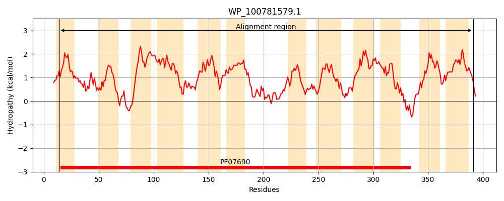
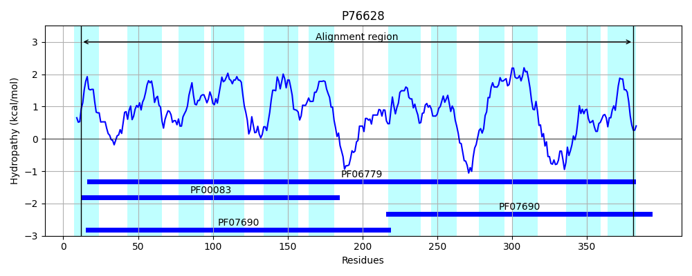
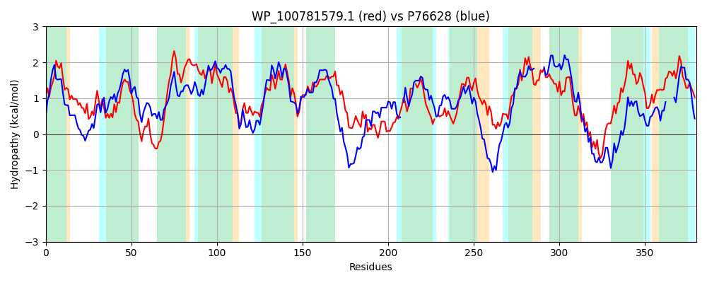

Hit Accession: P76628
Hit TCID: 2.A.1.36.3
Hit Description: gnl|BL_ORD_ID|11479 gnl|TC-DB|P76628|2.A.1.36.3 Putative uncharacterized transporter ygaY OS=Escherichia coli (strain K12) GN=ygaY PE=5 SV=2
Mach Len: 380
e:0.000000
Query TMS Count : 12
Hit TMS Count: 12
TMS-Overlap Score: 10.950000
Predicted Substrates:None
BLAST Alignment:
Score: 627 , Bit scores: 246 bits, E-value: 5.0e-78, Alignment length: 380, Percentage identity: 38
Query: 14 IIFILALGAGFSVASIYYAQPLLPLMGANLHLSVEGMGLVPTLTQAGYALGILFLLPLGDRHDRRRLILLKSAMLAILLFLCSLTGQLTSLLVVSLLIGMAATMAQDIVPAAAILAPAGKQGKMVGTVMTGLLLGILLSRTVSGVVGAVFGWRVMYQAAAVSVALIGVVMWRVLPRFAIHSTLSYPQLMASMAHLWLRYPALRRAALAQGALSVA-FSAFWSTLAVML-SEQYHMGSAVAGGFGIAGAAGALAAPLAGGLADKFGAGKVTQMGAALVTLSFALMFMLPLLPLHGQLALIALSAIGFDLGLQSSLVAHQNLVYSLEPQARGRLNALLFTVVFIGMSLGSVLGSKLYVLAGWNGVVTLAVVSGAIALAIRLL 391
+I ++++ G +VAS YYAQPLL + N LS G + T Q GYA G+LFL+PLGD +RRRLI+ + + A + + + + L +++ + L G+ + +AQ +VP AA LA K+GK+VGT+M+GLLLGILL+RTV+G++ + GWR ++ A+V +AL+ + +WR LP+ + L+YPQL+ S+ +++ LR AL G L+ A FS W+++A +L + ++ V G FG+AGAAGAL A AGG ADK + T G L+ LS+ ++ H + + + + DL +Q + +Q ++Y + P AR RL A T FIG + GS++ + + GW GV ++GA + LL
Sbjct: 12 LIVLMSIATGLAVASNYYAQPLLDTIARNFSLSASSAGFIVTAAQLGYAAGLLFLVPLGDMFERRRLIVSMTLLAAGGMLITASSQSLAMMILGTALTGLFSVVAQILVPLAATLASPDKRGKVVGTIMSGLLLGILLARTVAGLLANLGGWRTVFWVASVLMALMALALWRGLPQMKSETHLNYPQLLGSVFSMFISDKILRTRALL-GCLTFANFSILWTSMAFLLAAPPFNYSDGVIGLFGLAGAAGALGARPAGGFADKGKSHHTTTFGLLLLLLSWLAIWF-----GHTSVLALIIGILVLDLTVQGVHITNQTVIYRIHPDARNRLTAGYMTSYFIGGAAGSLISASAWQHGGWAGV----CLAGATIALVNLL 381 | Protein Hydropathy Plots: |
|---|
|  |  |
Pairwise Alignment-Hydropathy Plot:
|
|---|
|  |